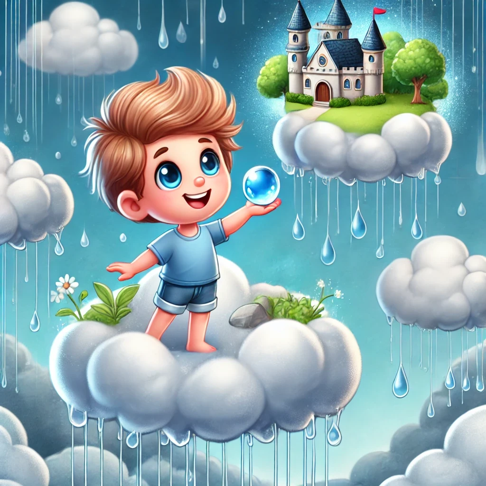

Nubeo y la Piedra de las Gotas

Había una vez, en lo alto del cielo, un niño llamado Nubeo que vivía en un palacio hecho de nubes esponjosas y blancas. Nubeo tenía un don muy especial: podía controlar el clima. Con solo mover sus manos, podía hacer que el sol brillara más fuerte, que el viento soplara suavemente o que la lluvia cayera sobre la tierra.
Nubeo amaba su vida en las nubes. Pasaba sus días jugando con los rayos de sol y persiguiendo arco iris. Pero lo que más disfrutaba era hacer llover. Sabía que la lluvia era muy importante para las plantas, los animales y las personas en la tierra.
Un día, Nubeo notó que la tierra estaba más seca de lo normal. Los ríos se estaban encogiendo y las flores comenzaban a marchitarse. Decidió que era hora de hacer llover para que todo volviera a la vida. Con una sonrisa, se subió a su nube mágica y comenzó a preparar una gran tormenta de lluvia.
Mientras Nubeo trabajaba, se dio cuenta de que algo no estaba bien. Las nubes estaban grises y pesadas, pero no querían soltar la lluvia. Preocupado, decidió investigar qué estaba causando el problema. Voló más alto en el cielo y descubrió a una nube vieja y sabia llamada Cirra.
Cirra le explicó a Nubeo que las nubes estaban tristes porque habían perdido su magia de lluvia. "Necesitamos recuperar nuestra alegría para poder hacer llover de nuevo," dijo Cirra. "Debemos encontrar la Piedra de las Gotas, un objeto mágico que se perdió hace mucho tiempo."
Nubeo, decidido a ayudar, se embarcó en una aventura para encontrar la Piedra de las Gotas. Viajó a través de cielos tormentosos, cruzó vientos fuertes y exploró rincones ocultos del cielo. Finalmente, llegó a una montaña de nubes donde encontró la piedra brillante, escondida en una cueva de estrellas.
Con la Piedra de las Gotas en mano, Nubeo regresó rápidamente al palacio de nubes. Colocó la piedra en el centro del salón de las nubes y, de repente, las nubes comenzaron a brillar y a reír de alegría. La magia de la lluvia había regresado.
Nubeo subió a su nube mágica y, con un movimiento de sus manos, hizo que la lluvia cayera sobre la tierra. Las plantas comenzaron a florecer de nuevo, los ríos se llenaron y los animales salieron a jugar bajo la lluvia. Las personas en la tierra miraron al cielo con gratitud, felices por la lluvia tan necesaria.
Desde ese día, Nubeo se aseguró de que la Piedra de las Gotas estuviera siempre segura y protegida. Continuó viviendo en su palacio de nubes, cuidando del clima y asegurándose de que la tierra siempre tuviera la lluvia que necesitaba.
Y así, Nubeo, el niño que vivía en las nubes, se convirtió en un verdadero guardián del clima, trayendo alegría y vida a todos los rincones de la tierra.
Y colorín colorado, este cuento se ha acabado. Buenas noches, Alondra. ¡Dulces sueños!